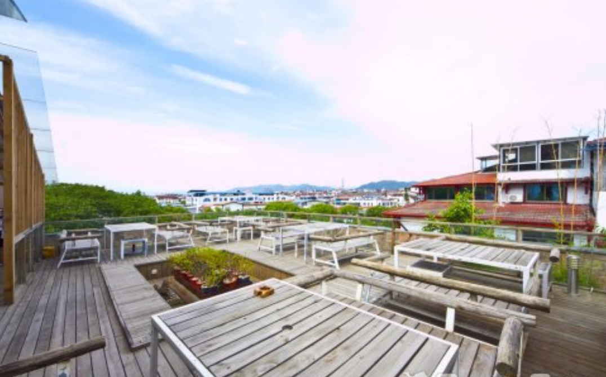

旧街一号溪岸旅馆
武夷山旧街一号溪岸旅馆与鼓浪屿圆沙洲连锁旅馆为姐妹店，本旅馆位于三姑朱子渡口旧街一号。酒店地理位置独一无二，景观效果无法复制；正看三姑石、大王峰；旅馆将武夷山风景区的灵魂——九曲溪精华元素充分运用到酒店设计的各个环节，旅馆客房21间，布置出九种风格迥异的客房，面积不等（18—40平方），价格区间在199元——429元不等；为国内外各类文艺青年、摄影爱好者提供人与自然完美结合的心灵住所。顶层山景露台、篝火露台为住店旅客准备了各式咖啡、茶饮、烧烤、酒水；充分体现武夷山慢生活理念。全店覆盖极速无线网络，满足各类网虫需求。

旧街1号溪岸旅馆紧邻武夷山漂流中心，靠近宝岛会展中心酒店，位置优越，环境优美。距离武夷山火车站16.5公里；距离武夷山汽车站18.9公里；距离武夷山机场7.4公里。
地理位置：武夷山三姑度假区旧街一号
交通方式：火车站、机场均可乘坐6路公交车、的士抵达
咨询电话：0599-5207288